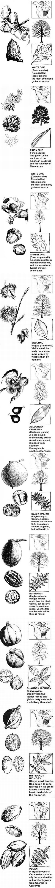

A Fall Field Guide Nuts
Handbook for autumn's nuts, including acorns, beechnuts, chestnuts and chinquapins, black walnuts, butternuts, hickory nuts, pecans, pine nuts, tree and leaf identification guide.
By Terry Krautwurst
September/October 1988
A handbook for those who, to paraphrase the late Euell Gibbons, love to reap what they have not sown.
FOR CENTURIES WE HUMANS HAVE joined the squirrels and the raccoons, the turkeys and the boars, the deer and the chipmunks in the harvest of fall nuts. Nutting was once serious business, a matter of survival, of storing sustenance for the coming winter. So it was with Native Americans and colonists, and with European peasants-and so it remains today among people still living a hand-to-mouth existence with the earth. Few foods offer nutrition as completely and as compactly as the nut. Botanically, it is a seed, the embryonic life of a tree. But in effect, it is a hermetically sealed energy capsule, packed with protein and fat; a nourishment concentrate.
Most people today go nutting for pleasure. The nuts remain the quarry, but nuts aplenty (though perhaps of less noble bearing) can be had in any grocery store. Nutting, on the other hand, puts you inside the fall forest kaleidoscope, every step acrunch in leaves, the air crisp and laden with the musky scent of autumn. There is no better time to be in the woods, and no better excuse (whether or not you need one) than to be gathering tasty nuts.
Ah, there's the crux of the matter: Not all nuts are tasty. Some are astonishingly bitter. Others, though toothsome, require extreme determination, if not demolition, if one is to crack them apart-and then they may yield little more than a smidgen of edible kernel. Most folks know a nut when they see one, but what kind of nut is it, and is it worth picking up?
Acorns
No matter how many mothers have told their children otherwise, acorns are not poisonous; they are one of the oldest foods known to man. Evidence of their consumption has been found amid the debris in Paleolithic cave dwellings. They were the staff of life for many Native American groups, who ground the nuts into meal for bread and mush. The Pilgrims found baskets of roasted acorns hidden in underground chambers and, noting the nuts' similarity in taste to that of chestnuts, welcomed oak mast into their diet. A wise move: Acorn kernels provide a complete vegetable protein, up to 707o by weight in some species. More than half their bulk consists of energy-rich carbohydrates.
Amazingly, the annual nut crop from oak trees in North America surpasses the combined yearly yield of all other nut trees, both wild and cultivated. (So if you're wondering whether gathering up a bushel or two of acorns will deprive some creature of sustenance, worry not.) There are more than 60 species of oak trees in North America, and every one of them produces edible acorns.
Some, however, are more edible than others. Oaks are broadly divided into two groups: red (or black) oaks, and white. Generally, nuts from trees in the red-oak group have a bitter taste, thanks to their high content of tannin, an astringent substance. White oaks, however, contain less tannin and produce acorns that are considerably sweeter.
To distinguish between the two groups, look at the leaves of the tree in question. If the leaf lobes (the projections around the outer edge) are distinctly pointed, the tree is most likely a bitter-acorn, red-oak variety: pin, black, red, scarlet and willow oaks are members of the family. White-oak leaves, on the other hand, have rounded lobes. Chestnut, bur, live, white, gambel (also known as Rocky Mountain white) and post oaks are examples of sweet-acorn types. Another distinguishing feature is the inner surface of an acorn's cap: If it's smooth, the nut probably is from a white oak; if it's fuzzy, chances are the nut was produced by a red.
Regardless of the type of acorn you find, taste a few before you gather quantities. Acorns vary in bitterness not only from species to species, but from tree to tree. Sample some nuts from several different trees, then forage from the best among them. Pick only fresh nuts, and discard any specimens that appear moldy or that have worm or insect holes (this is good practice, of course, when gathering any variety of wild nuts).
Once you've removed their caps and shelled them, exceptionally sweet acorns can be eaten as they are, either raw or roasted (bake them in a slow, 250° to 300°F, oven for about an hour). But even "sweet" varieties can be too bitter for some tastes, and in some places only red-oak acorns are easily available. Fortunately, tannin is soluble in water and can be extracted, leaving behind palatable nuts. Boil the kernels whole for 15 minutes, pour the water off (it will be brown with tannin), add fresh water, boil for another 15 minutes, pour the water off, and add fresh and so on, until the water is only barely tinted. White-oak acorns may require only one or two changes of water, while red-oak nuts may need many. (Incidentally, you may want to save that first batch of tanninrich water; it is a wonderfully soothing topical wash for bee stings, insect bites, sunburn and rashes.)
Once the tannin has been removed, roast the nuts and use them as you will. They're good finely chopped and added to bread or muffin dough. Most acorn fans, though, like to grind the nuts into meal-just put them through a blender or grain mill, or pulverize the kernels with a mortar and pestle. Acorn meal, light brown and pleasant tasting, can be substituted for up to half the flour in any recipe.
Beechnuts
There is no mistaking the handsome American beech (Fagus grandifolia). Its strikingly smooth, duskygray bark has served as a scratch pad for generations of lovers and others with something, anything, to say. The earliest Sanskrit characters were inscribed on strips of beech bark. And it was a beech tree in Washington County, Tennessee, on which Daniel Boone carved the famous missive, "D Boone cilled a bar on tree in year 1760." (That tree lived until 1916; it was estimated to be 365 years old.)
In autumn, the beech's toothed, spear-shaped leaves turn a rich copper color or a near-luminous pale yellow and begin to fall, revealing reddish twigs and small, prickly burs. As they mature, the burs split open, exposing two (sometimes three) small, triangular nuts that ripen-usually by first frost-and drop to the ground. Competition for beechnuts is fierce among four-legged creatures, and the kernels can be hard to see once they're scattered among leaves, so your best bet is to try to gather them from lower branches just before they're ready to fall. If you're lucky, you'll get a few before the squirrels and raccoons do.
Beechnuts have a thin shell that you can peel off with a fingernail. The flesh is sweet and nutritious: nearly 20°70 protein! Fresh nuts spoil quickly, though, so dry them in full sun for a day or two (you or the family dog will have to stand guard over them), or roast them in a slow oven.
Though still abundant, American beeches once covered vast stretches of the Midwest from Kentucky to central Michigan. Unfortunately, settlers recognized the beech as a sign of good soil, and countless trees fell to the ax and plow. Eventually, their demise also contributed to the extinction of the passenger pigeon, which relied on beech mast for much of its diet.
Though the American beech is strictly an eastern tree, its similar-looking Old World cousin, the European beech ( F. sylvatica ) also produces edible nuts and has become naturalized both in the Northeast and in western coastal states.
Chestnuts and Chinquapins
Your chances of coming across a nut-bearing American chestnut (Castanea d entata) are almost nil, but no article on edible wild nuts is complete without mention of this once-great tree. Less than 100 years ago, stands of majestic chestnuts, some specimens measuring in excess of 120 feet tall and six feet around, covered a range of more than 200 million acres east of the Mississippi, from Canada to the Gulf of Mexico. Gathering bushels of sweet, fresh chestnuts-which were reportedly far superior in taste to the Italian and Chinese chestnuts we eat now-was a traditional autumn activity. Today, except for a few isolated specimens, all the great trees are gone, the victims of chestnut blight, a fungus carried to this country at the turn of the century on planting stock imported from the Orient.
As the disease spread from New York westward, infected trees were cut down in a futile attempt to halt the blight. The stumps remain, demonstrating the chestnut's superior rot-resistance, and many continue to send up sprouts, some of which survive a dozen or more years. On occasion, one of these seedlings produces a small nut crop for one or two seasons before succumbing to the blight. Sadly, then, most living chestnut trees are identifiable by their sapling size and by the old, weathered stumps from which they grow. Their leaves resemble a beech's, but are longer and more deeply toothed.
The chinquapins are close cousins of the American chestnut, and though they are also susceptible to blight, they are a bit more resistant and bear much earlier, at only two or three years old. The Ozark chinquapin (C. ozarkensis) is a small tree with long, deeply toothed leaves; it grows in a limited range encompassing western Arkansas, eastern Oklahoma and southern Missouri. The Allegheny chinquapin (C. pumila), really more a tall, thicket like shrub than a tree, sports similarly shaped but less deeply toothed leaves than its cousins. Its range extends from southern Pennsylvania through most of the Southeast to Texas. Both kinds of chinquapins yield sweet, small chestnut-like nuts (they look like flattened acorns), with each kernel encased in a hard shell within a prickly, round bur. Both the bur and the shell are difficult to remove, but they yield-in miniature-the taste of a bygone era. Chinquapins can be eaten raw, roasted or boiled.
Black Walnuts
Prized even more for its rich, dark wood than for its tasty nuts, America's black walnut (Fuglans nigra) is one of the great unknown victims of the two world wars. Just before and during both conflicts, black walnuts were felled en masse to meet the demand for gunstocks. Still, the tree survives throughout its original range: nearly all the eastern half of the U.S. except the far north. In the West, there are four other native walnut species with extremely limited ranges. Of them, only the northern California walnut (F. hindsii) produces nuts approaching the size and quality of its eastern cousin's.
The black walnut is easy to identify, particularly in the fall when, beginning early in the season, its leaves turn yellow and drop off, revealing clusters of one-and-one-half-to two-inch-diameter green globes-the nuts, enclosed in smooth, fleshy husks. In a few weeks the green fruit falls, too, and slowly turns black as the husk decomposes.
There are three formidable challenges to be met in harvesting black walnuts. First, you must get to the nuts before the squirrels; this is a matter of picking them up as soon after they fall as possible (sometimes a minute or two is none too early). Second, you must remove the nut from the husk before the flesh decomposes and saturates the inner shell and kernel with bitter brown juice. (That juice, incidentally, is an indelible dye that simply does not wash off clothing or skin.) And third, you'll have to extract the nutmeat from the shell.
All manner of methods have been devised for dehusking walnuts. Euell Gibbons suggested wearing heavy boots and simply toeing the husks off against the ground. Too often, though, much of the husk remains anyway. Others dump the nuts in their driveways and let a couple of days of traffic squash the husks off. This makes for a messy driveway, however, and the nuts tend to shoot out in all directions from under rubber tires. It's best to face facts, don old clothes, slip on a pair of rubber gloves and cut and scrape the husks away with a knife. Put the freshly hulled nuts on an old window screen, give them a good hard hosing to wash away bits of husk, and let them dry in the thin October sun.
Walnuts, like most other nuts, keep best in the shell. This is as good an excuse as any to put off the difficult job of cracking them open and removing the kernels. Commercial English or Persian walnuts open easily and yield whole or half kernels. Not so the black walnut. You have to smash your way in, and then pick out the pieces of edible nut from the fragments of hard shell. You can buy special nutcrackers, or tackle the job the old-fashioned way: Put a flat rock in a cardboard box, place a nut on the rock, and smack it with a hammer. Once you've tried black walnut pieces in homemade ice cream, bread or muffins, you'll know the reward is worth the effort.
Butternuts
A close relative of the black walnut and otherwise known as the white walnut, the butternut (Fuglans cinerea) ranges farther north, extending into New England and parts of Canada, but not as far south. The butternut ranks among the highest in food energy of edible nuts, with a whopping 27.907o protein, 61.207o fat and about 3,000 calories to the pound. Wild nut aficionados rank cinerea kernels near the top in taste, too.
Though its leaves resemble those of the black walnut and its crown is similarly rounded and open, the butternut wears fewer leaflets on longer stems, so its foliage overall appears sparse. Its bark is distinctly lighter than the black walnut's dark gray or brown bark, and is generally smoother.
Butternut trees bear early-at just two or three years of age. The fruit is elliptical, like a long, narrow egg, and has a thin, green outer husk covered with fine, bristly hairs that give off a near-permanent brown dye. The inner surface of the husk produces an equally powerful orange dye. (Time to get out the old clothes and rubber gloves again.) The nut inside is oval, with a deeply ridged and pitted shell that's almost but not quite as difficult as 1. nigra to crack.
The thin, fragrant, oily kernel inside each shell can go rancid quickly, so it's important to shell and use butternuts soon after you've husked and dried them. No problem; butternuts are sweet and delicious straight from the shell, raw or roasted, or baked in cake or pastry.
Hickory Nuts
Hickories-in all, some 20 species and subspecies-are widespread throughout the eastern and central United States. The hickory is the consummate "pioneer tree," not only because of its importance to early settlers as a food source but also because of the hard, durable wood it provided (and still provides) for tools and tool handles.
When you're a nut gatherer, hickories are both a joy and a frustration. Though several kinds yield delicious, sweet nutmeats, others produce fruit that is bitter or almost all shell. It's not always easy to tell one kind from the other.
Fortunately, the two most desirable nut hickories display a distinctive trait belied by their names: The shellbark hickory (Carya laciniosa) has rough, loose bark that separates in narrow strips; the shagbark hickory (C. ovata) has an even more distinctly fringed trunk, with long, loose strips of bark that often shed and accumulate at the foot of the tree. Both types bear a nut encased in a thick, green husk that, when ripe, separates to the base in four parts. The shagbark hickory usually has five leaflets per leaf and produces relatively thin-shelled nuts; the shellbark generally sports seven leaflets per leaf and yields thick-shelled (but nonetheless meaty and tasty) nuts. Another common thick-husked variety, the mockernut hickory (C. tomentosa), yields sweet but small (some would say minuscule) nutmeats within a thick shell; the mockernut's seven or nine leaflets per leaf give off a characteristically pungent odor when crushed.
The pignut hickory (C. glabra), like the shagbark, has five leaflets per leaf, but each nut is encased in a thin husk that seldom separates all the way to the base. Depending on the individual tree, the nuts may taste sweet or bitter. One of the most widely distributed hickories, and the least desirable for nuts, is the bitternut (C. cordiformis). Luckily, it's easy to identify. The bitternut hickory has the smallest leaves in the family-seven to nine leaflets on a relatively short stem-and the buds at the ends of its twigs are bright yellow. The nut husks are thin and flecked with yellow.
Like walnuts, hickories keep well in the shell once husked and dried. They're easier to crack than walnuts or butternuts, but the job still calls for a hammer or some other tool of brute force.
Pecans
Actually a hickory, the pecan (Carya illinoensis) is our most important native nut tree and has earned a special niche in our culture and cuisine. The pecan is the ideal nut: easy to harvest, thin-shelled, meaty and delicious. Little wonder that many Indian tribes prized the pecan above all others. Native Americans are believed to have extended the range of the pecan by planting the nut as they traveled the Mississippi River and its tributaries. Spaniards exploring the New World, and, later, settlers venturing west of the Appalachians, encountered the huge spreading trees, some more than 120 feet tall and four feet in diameter, along the entire Mississippi River Valley and through much of eastern Texas and Oklahoma.
The trees were so numerous that it was common practice among our forebears to harvest pecans each year by selecting the largest, heaviest-bearing trees and cutting them down. This waste is particularly puzzling because the pecan, which bears its oval, green-husked fruit in clusters of three to 10, readily drops its nuts. Usually by mid-autumn, the husks split into four crescent-shaped pieces and the ripe, pale brown nuts fall to the ground.
Dozens of new pecan varieties have been developed since the turn of the century, and the nut is grown commercially in orchards from Georgia to California. Still, fully half the market crop is produced from native species. Wild pecans may be a bit smaller than their commercial counterparts, but their shells crack easily and yield whole, sweet, rich-tasting kernels. There are no bitter or inedible pecan types. Gather all you can find.
Pine Nuts
What the West lacks in deciduous nut-bearing trees it more than makes up for with nut-bearing pines. Among the different species native to the West that produce delicious edible nuts are ponderosa pine (Pinus ponderosa), Coulter pine (P. coulteri), sugar pine (P. lambertiana) and Digger pine (P. sabiniana). Some of these produce enormous quantities of edible kernels; the sugar pine, for example, produces huge cones up to 18 inches long and four inches across, packed with seeds.
The largest and tastiest pine nuts, though, are produced by the scrubby little pinon pine, a familiar tree throughout the arid Southwest. Pinon nuts, a trendy gourmet item of late, have been a staple among Indians of the region for millenia. Evidence of their consumption has been found in fire pits at archaeological sites in Nevada dated 6,000 years old. At 3,000 calories to the pound, pinons are hardly diet food. Some tribes are said to have forbidden their consumption by pregnant women, for fear that the nuts would fatten the babies too much, making delivery difficult.
There are several species of pinon (also commonly spelled pinyon): In extreme southern California, the Parry pinon (P. quadrifolia); in the deep Southwest, the Mexican pinon (P. cembroides); in southern California and Nevada, the single-leaf pinon (P. monophylla); and through much of the Southwest, the widespread common pinon (P. edulis). The last is the state tree of New Mexico and the major source of pinon nuts harvested for market in this country.
Gathering pinon nuts can be sticky business, particularly if you do so in late summer, when the green cones are still closed and heavy with resin. The cones must be dried in hot sun for several days or charred in a fire to drive off the resin and open the cones sufficiently to free the nuts. An easier approach is to wait till late September or October, when the cones begin to open and take on a brownish color but before they're releasing the nuts. Moisture causes the cones to swell and hold the kernels tightly, so choose a hot, sunny day following several days of dry weather. Spread a tarp on the ground beneath the tree, shake the tree hard a few times, and pick out the nuts that fall to the cloth. Going from tree to tree, you can gather several pounds of nuts in just an hour or so using this technique-if it's a good year for the nuts. Pinons produce a large crop only every three or four years.
Two other methods, unfortunately, are commonly used to harvest pinons. One is to cut the entire tree down (sound familiar?). The other is to rob the nests of pack rats and squirrels, where considerable quantities of pinons may be stored. Wildlife officials in areas where this is common practice ask that the pinon plunderers replace the nuts with pinto beans, so the animals won't be without food for the winter.
Pinons can be consumed one at a time, raw or roasted, like sunflower seeds; just crack the shell between your teeth and eat the inner meat. To process larger quantities, roast the nuts in a low (300° F) oven until the shells turn brittle. Then spread the nuts on a counter top or a table and use a rolling pin to crack the shells and free the kernels. Pinons are great in granola and trail mix, added to baked goods or sprinkled in soups and on salads.
If You Go Out in the Woods Today...
Next time you go for a walk in the autumn woods, take a sack with you, slow your pace to a careful scrutiny of the forest floor and leafy canopy, and gather up some of nature's best-tasting and most nutritious foods. You'll soon learn why we humans, even before we were humans, have always been nuts about nuts.
|
|
 |
 |